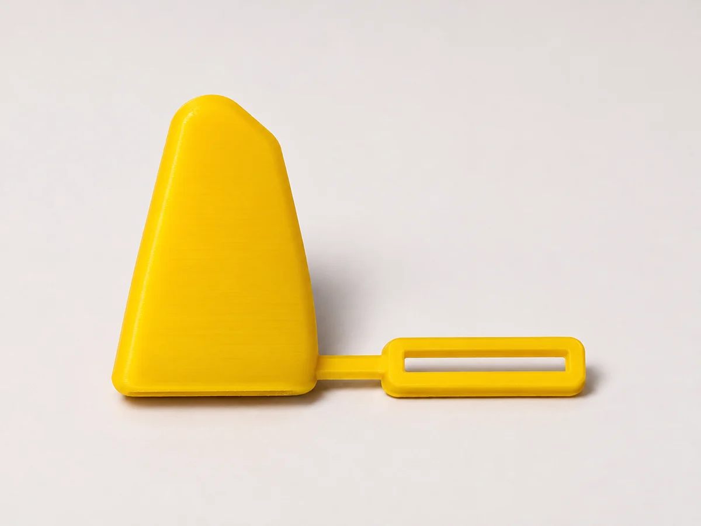
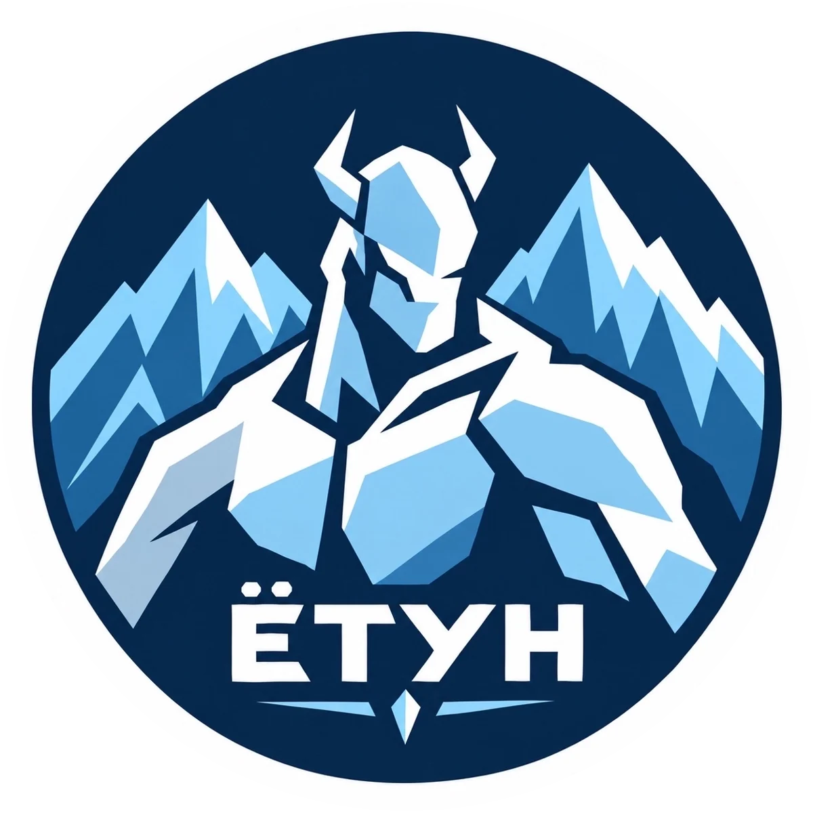
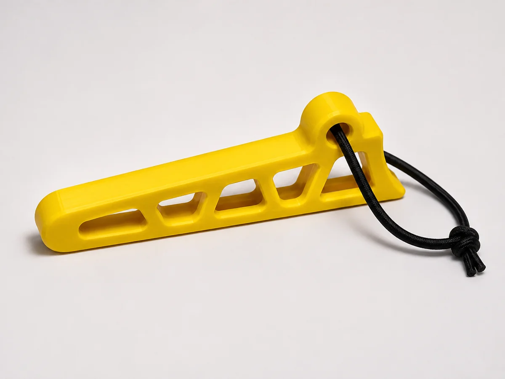
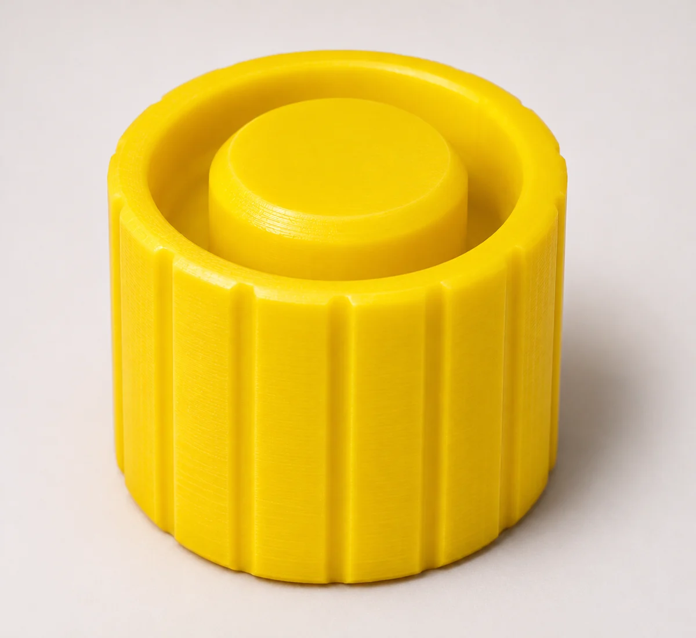
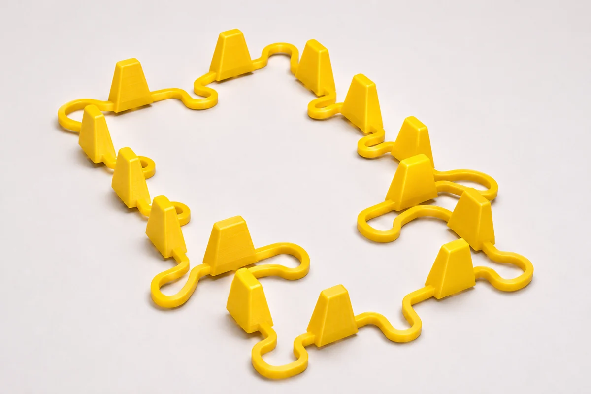

01Для ледорубов
Защита клюва и острых элементов ледоруба.

ЁТУНАКСЕССУАРЫ ДЛЯ ГОР И ЛЬДА
Продуманная защита острых элементов снаряжения при хранении и транспортировке. Аксессуары изготавливаются методом 3D-печати.
Обсудить заказ ↗Посмотреть изделия ↓01 / КАТАЛОГ
Аксессуары для хранения и перевозки альпинистского и ледового снаряжения. Подбираем форму изделия под конкретную задачу и инструмент.

01Защита клюва и острых элементов ледоруба.

02Защитные элементы для технического снаряжения.

03Колпачки для защиты острых частей ледобуров.

04Защитные решения для острых зубьев кошек.
Нужна защита для конкретной модели? Напишите нам — обсудим размеры, форму и возможность изготовления.
02 / МАТЕРИАЛ И ТЕХНОЛОГИЯ
Для изготовления используется термопластичный полиуретан TPU 95A. Это эластичный материал, который позволяет создавать защитные элементы сложной формы.
03 / О БРЕНДЕ
«Ётун» — проект аксессуаров для альпинистского и ледового снаряжения. Мы делаем защитные чехлы и колпачки, которые помогают аккуратно хранить и перевозить инструменты.
Название отсылает к ётунам — великанам скандинавских мифов, связанным с суровой природой и стихиями.
Познакомиться с проектом в Telegram ↗04 / ВОПРОСЫ
Если не нашли ответ — напишите нам и приложите модель снаряжения или его размеры.
Для печати используется TPU 95A — гибкий термопластичный полиуретан.
Совместимость зависит от геометрии конкретной модели. Перед заказом рекомендуем уточнить её у нас и при необходимости прислать размеры или фотографии.
Напишите нам о задаче и укажите модель снаряжения. Возможность изготовления обсудим индивидуально.
05 / СВЯЗЬ
Расскажите, для какого инструмента нужна защита.